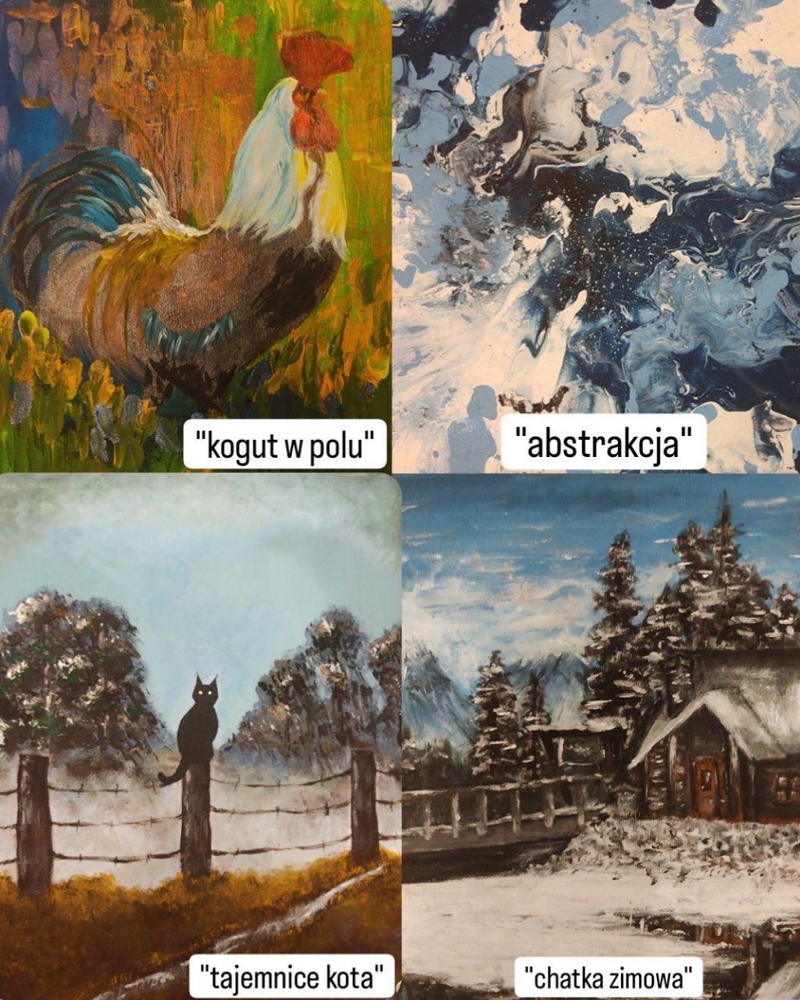
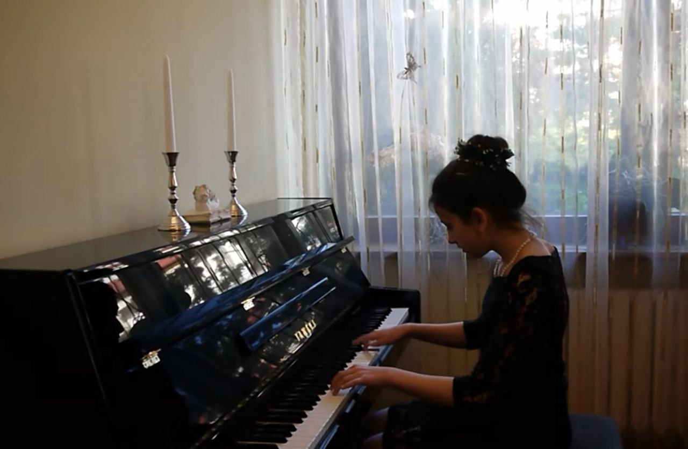

Mam na imię Diana i jestem uczennicą II Liceum Ogólnokształtącego w Szczecinie.
Na tej stronce chciałabym przedstawić tobie kilka informacji o mnie.
Od małego moimi największymi pasjami były muzyka oraz sztuka. Myślę, że jestem osobą kreatywną, zawsze znajdującą pomysłowe rozwiązania. Interesują mnie również języki obce i matematyka, przez to też profil matematyczno-językowy wydawał się dla mnie idealnym wyborem, który może otworzyć przede mną wiele możliwości do rozwoju w przyszłości. Uwielbiam też towarzystwo przyjaciół oraz szybko nawiązuję kontakt z nowo poznanymi osobami.
SZTUKAJeśli chodzi o sztukę to pomimo podziwiania w muzeach czy na wystawach obrazów różnych artystów interesuję się też historią ich powstania, biografią ich autorów itd. Probuję też tworzyć własne obrazy - na co dzień maluję oraz rysuję w przeróżnych stylach, szczegółowo analizując poszczególny z nich, dobierając ten z którym najbardziej czuję się komfortowo. Muszę zaznaczyć że nie chodzi tu tak bardzo o samo zdecydowanie się, lecz podoba mi się różnorodność moich prac. Uwielbiam zarówno jaskrawe kolory jak i melancholijne szarości - w tych drugich odnajduję się najlepiej. |
MUZYKACodziennie słucham muzyki - nawet nie wiem, czy potrafiłabym przeżyć bez niej przynajmniej jeden dzień (choć może to zabrzmieć dość dramatycznie:)) Najbardziej zapadły mi w ucho takie gatunki jak punk, rock, metal i ich odmiany. Czasem wolę też zrelaksować się przy lekkich dźwiękach jazz'u czy blues'u. Nie mogę również pominąć tu muzyki klasycznej, która szczególnie mi się podobała jeszcze od wczesnych lat. Mając zaledwie 7 lat wraz ze wsparciem mojej mamy udało mi się dostać do szkoły muzycznej z fortepianem jako główny instrument. Od razu poczułam mocną więź z tym miejscem i następne cztery lata w nim spędzone dały mi wielkie doświadczenie, które przydało mi się w dalszym życiu. Szkoła muzyczna otworzyła przede mną drzwi do zupełnie innego świata, w którym poznałam wielu wspaniałych ludzi i miałam możliwość zarówno osobiście odkryć mój talent jak i dzielić się nim z innymi. Nigdy nie zapomnę niesamowitych koncertów w jakich miałam przyjemność uczestniczyć, miłości do sceny oraz pełnej zapału publiczności. Choć z biegem czasu moja motywacja do grania na pianinie zanikła to nadal uważam, że były to bardzo ciekawe przeżycia, o których na pewno będę pamietać jeszcze przez bardzo długi czas. |
Z CZEGO JESTEM DUMNA?Otrzymałam dotychczas kilka nagród za konkursy z różnych przedmiotów (przeważnie z konkursów plastycznych), które nadal bardzo doceniam. W szkole aktywnie brałam udział w różnorodnych wydarzeniach i w wspomnianych wcześniej konkursach, więc mogę się teraz pochwalić dużą ilością dyplomów na półkach. Niewątpliwie wielkim sukcesem dla mnie było też dostanie się do LO II, gdyż poziom nauczania tutaj jest na bardzo wysokim poziomie, przez co i konkurentów przy rekrutacji jest dużo. Jestem też dumna z moich osiągnięć muzycznych - ukończenie szkoły muzycznej, występ w filharmonii czy inne wyróżnienia artystyczne. Z pozytywnym nastawieniem oczekuję, co życie mi jeszcze przyniesie. |
POWRÓT